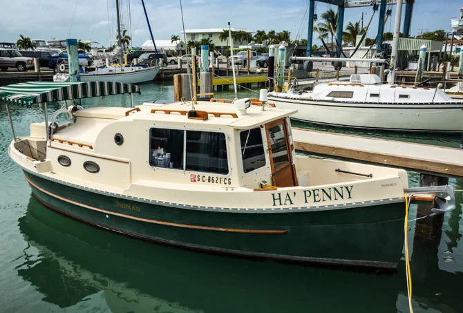

B-Atlas Boat Guide · NMBL-24-NO
Nimble Nomad Pocket Trawler
1991–2005
The Nimble Nomad is a Ted Brewer-associated 24-foot pocket trawler/pilothouse powerboat with an outboard mounted in a well, compact liveaboard accommodations and an 8-foot-6-inch trailerable beam. It is a slow, characterful inland/coastal cruiser rather than a planing boat.

- LOA
- 24′ 7″ / 7.49 m
- LWL
- 22′ 4″ / 6.81 m
- Beam
- 8′ 6″ / 2.59 m
- Draft
- 1′ 4″ / 0.41 m
- Hull behaviour
- Displacement
- Fuel
- Gasoline
- Propulsion
- Outboard
- Engine configuration
- Single outboard in well
- Boat family
- Trawler
- Construction
- Fiberglass
Best for
- Owners prioritizing trailerability, shallow draft and distinctive traditional character
- Couples exploring inland waterways and protected coastal cruising grounds
- Buyers comfortable with uncommon low-volume boats
Trade-offs
- Narrow beam limits interior and side-deck space
- Low-volume production means parts, documentation and resale comparisons can be sparse
- Kodiak and rigged Wanderer versions introduce sailing systems that do not fit a pure powerboat comparison
Known concerns
- No model-specific concern has been promoted to B-Atlas’s evidence threshold. This does not mean the model has no age-, condition- or hull-specific risks.
Inspection focus
- Confirm exact hull, rig and propulsion configuration
- Inspect deck/hull core, pilothouse joints and hardware penetrations
- Inspect propulsion installation, steering and fuel system
- For rigged Kodiak/Wanderer examples, inspect mast step, rigging, chainplates and centerboard/keel systems
Continue researching
Related boat models
Albin 25 Motor Cruiser
25 ft · Displacement
Windy 26 Snekke 26 SN / Norwegian Snekke
25.43 ft · Semi-Displacement
Nimble Wanderer Power Cruiser / Optional Motorsailer
32.42 ft · Displacement
Albin 27 Family Cruiser
26.75 ft · Semi-Displacement
Cheoy Lee 28 Sedan Trawler Sedan
27.92 ft · Semi-Displacement
Prairie 29 Coastal Cruiser Coastal Cruiser
29 ft · Displacement
About this record
B-Atlas preserves uncertainty: missing information remains unknown rather than being treated as a negative. Specifications and guidance describe the model record; individual boats can differ by year, equipment, refit and condition.